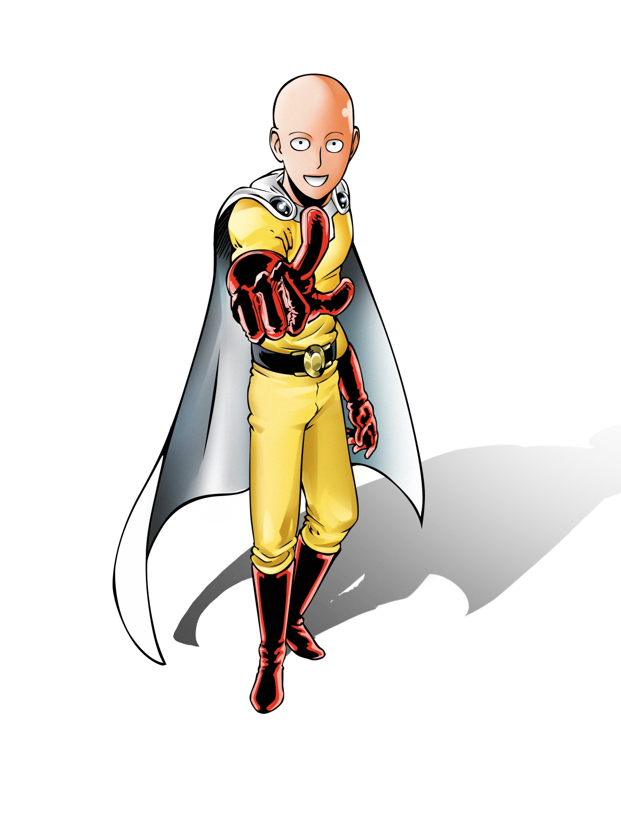

Saitama é o protagonista da série One Punch-Man, conhecido como o herói mais poderoso do mundo, capaz de derrotar qualquer inimigo com um único soco. Ele é um humano da Cidade Z que, após um intenso treinamento de três anos, perdeu o cabelo e superou todos os limites físicos, tornando-se invencível.

| Nome | Relação |
|---|---|
| Genos | Discípulo |
| Garou | Antagonista |
| King | Melhor amigo |
| Fang | Mentor |
Para saber mais sobre Saitama, visite o site da Wikipédia
Site desenvolvido pelo aluno Lucas Gabriel do 2º TINF Campus Patrocínio